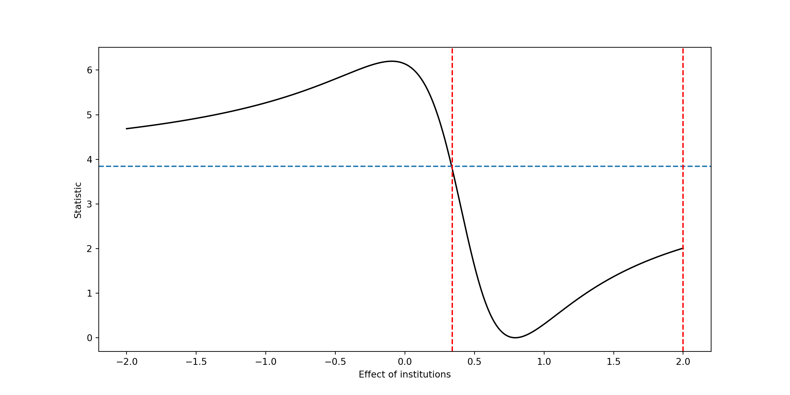
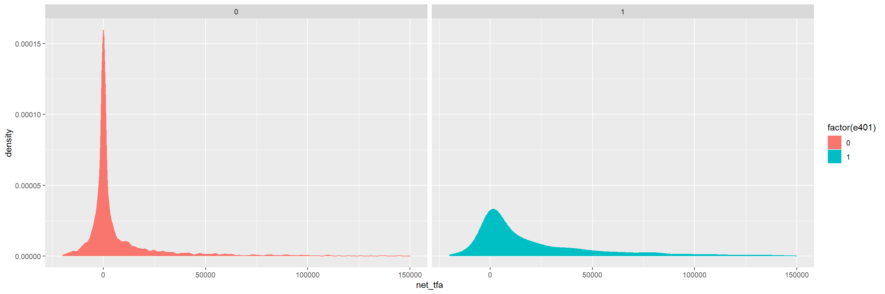

Chapter 11 Functional Approximations by Trees and Neural Networks
Here we show how the function \[ x \mapsto exp(4 x) \] can be easily approximated by a tree-based methods (Trees, Random Forest) and a neural network (2 Layered Neural Network)
set.seed(1)
X_train <- matrix(runif(1000),1000,1)
Y_train <- exp(4*X_train) #Noiseless case Y=g(X)
dim(X_train)## [1] 1000 1library(rpart)
# shallow tree
TreeModel<- rpart(Y_train~X_train, cp=.01) #cp is penalty level
pred.TM<- predict(TreeModel, newx=X_train)
plot(X_train, Y_train, type="p", pch=19, xlab="z", ylab="g(z)")
points(X_train, pred.TM, col=3, pch=19)
# importing relevant packages
import numpy as np
from SyncRNG import SyncRNG
from sklearn.tree import DecisionTreeRegressor
from sklearn.ensemble import RandomForestRegressor
from sklearn.ensemble import GradientBoostingRegressor
import matplotlib.pyplot as plt
import tensorflow as tf
from tensorflow import keras
from tensorflow.keras import layers
from keras.models import Sequential
from keras.layers import Dense
s = SyncRNG(seed = 123456)
X_train = np.zeros( 1000 ).reshape( 1000 , 1 )
print( X_train.shape )## (1000, 1)for i in range( 0 , X_train.shape[0] ):
X_train[ i , 0 ] = s.rand()
Y_train = np.exp( 4 * X_train )
TreeModel = DecisionTreeRegressor( random_state = 0, ccp_alpha = 2.02 )
TreeModel.fit( X_train , Y_train )## DecisionTreeRegressor(ccp_alpha=2.02, random_state=0)pred_TM = TreeModel.predict( X_train )
fig = plt.figure( figsize = ( 5 , 5 ) , dpi = 100 )
ax1 = fig.add_subplot( 111 )
ax1.scatter( X_train , Y_train, c='black', marker="o" , s = 20 )## <matplotlib.collections.PathCollection object at 0x000000002D9B6CA0>ax1.scatter( X_train , pred_TM , c='green', marker="o" , s = 20)## <matplotlib.collections.PathCollection object at 0x000000002A2E61C0>plt.xlabel( "z" )## Text(0.5, 0, 'z')plt.ylabel( "g(z)" )## Text(0, 0.5, 'g(z)')plt.show()
11.1 Functional Approximation by a Tree
set.seed(1)
X_train <- matrix(runif(1000),1000,1)
Y_train <- exp(4*X_train) #Noiseless case Y=g(X)
dim(X_train)## [1] 1000 1library(rpart)
TreeModel<- rpart(Y_train~X_train, cp = .0005) #cp is penalty level
pred.TM<- predict(TreeModel, newx = X_train)
plot(X_train, Y_train, type="p", pch=19, xlab="z", ylab="g(z)")
points(X_train, pred.TM, col=3, pch=19)
s = SyncRNG(seed = 123456)
X_train = np.zeros( 1000 ).reshape( 1000 , 1 )
for i in range( 0 , X_train.shape[0] ):
X_train[ i , 0 ] = s.rand()
Y_train = np.exp( 4 * X_train )
TreeModel = DecisionTreeRegressor( random_state = 0, ccp_alpha = 2.02*0.0005/0.01 )
TreeModel.fit( X_train , Y_train )## DecisionTreeRegressor(ccp_alpha=0.101, random_state=0)pred_TM = TreeModel.predict( X_train )
fig = plt.figure( figsize = ( 5 , 5 ) , dpi = 100 )
ax1 = fig.add_subplot( 111 )
ax1.scatter( X_train , Y_train, c='black', marker="o" , s = 20 )## <matplotlib.collections.PathCollection object at 0x0000000037EF0F10>ax1.scatter( X_train , pred_TM , c='green', marker="o" , s = 20)## <matplotlib.collections.PathCollection object at 0x0000000037EFD2B0>plt.xlabel( "z" )## Text(0.5, 0, 'z')plt.ylabel( "g(z)" )## Text(0, 0.5, 'g(z)')plt.show()11.2 Functional Approximation by RF
Here we show how the function \[ x \mapsto exp(4 x) \] can be easily approximated by a tree-based method (Random Forest) and a neural network (2 Layered Neural Network)
library(randomForest)## randomForest 4.6-14## Type rfNews() to see new features/changes/bug fixes.RFmodel<- randomForest(Y_train~X_train)
pred.RF<- predict(RFmodel, newdata=X_train)
plot(X_train, Y_train, type="p", pch=19, xlab="z", ylab="g(z)")
points(X_train, pred.RF, col=4, pch=19,)
s = SyncRNG(seed = 123456)
X_train = np.zeros( 1000 ).reshape( 1000 , 1 )
for i in range( 0 , X_train.shape[0] ):
X_train[ i , 0 ] = s.rand()
Y_train = np.exp( 4 * X_train )
## REstrictions to make RF from SKlearn
## similar to random forest from r package
if Y_train is not None and ( Y_train.dtype != str ):
mtry = max( [ np.round( ( X_train.shape[ 1 ]/3 ) ).astype(int) , 1 ] )
else:
mtry = np.round( np.sqrt( X_train.shape[ 1 ] ) ).astype(int)
if Y_train is not None and ( Y_train.dtype != str ):
nodesize1 = 5
else:
nodesize1 = 1
RFModel = RandomForestRegressor( random_state = 0 , n_estimators = 500 ,\
max_features = mtry , \
n_jobs = 4 , \
min_samples_leaf = nodesize1 ).\
fit( X_train , Y_train )## <string>:1: DataConversionWarning: A column-vector y was passed when a 1d array was expected. Please change the shape of y to (n_samples,), for example using ravel().RFModel.fit( X_train , Y_train )## RandomForestRegressor(max_features=1, min_samples_leaf=5, n_estimators=500,
## n_jobs=4, random_state=0)
##
## <string>:1: DataConversionWarning: A column-vector y was passed when a 1d array was expected. Please change the shape of y to (n_samples,), for example using ravel().pred_RF = RFModel.predict( X_train )
fig = plt.figure( figsize = ( 5 , 5 ) , dpi = 100 )
ax1 = fig.add_subplot( 111 )
ax1.scatter( X_train , Y_train, c='black', marker="o" , s = 20 )## <matplotlib.collections.PathCollection object at 0x0000000038025D00>ax1.scatter( X_train , pred_RF , c='blue', marker="o" , s = 5)## <matplotlib.collections.PathCollection object at 0x00000000380320A0>plt.xlabel( "z" )## Text(0.5, 0, 'z')plt.ylabel( "g(z)" )## Text(0, 0.5, 'g(z)')plt.show()11.3 Boosted Trees
library(gbm)## Loaded gbm 2.1.8data_train = as.data.frame(cbind(X_train, Y_train))
BoostTreemodel<- gbm(Y_train~X_train, distribution= "gaussian", n.trees=100, shrinkage=.01, interaction.depth
=4)
#shrinkage is "learning rate"
# n.trees is the number of boosting steps
pred.BT<- predict(BoostTreemodel, newdata=data_train, n.trees=100)
plot(X_train, Y_train, type="p", pch=19, xlab="z", ylab="g(z)")
points(X_train, pred.BT, col=4, pch=19,)
BoostTreemodel = GradientBoostingRegressor(random_state=0 , max_depth = 4 , learning_rate = 0.01 , n_estimators = 100 )
BoostTreemodel.fit( X_train, Y_train )## GradientBoostingRegressor(learning_rate=0.01, max_depth=4, random_state=0)
##
## C:\Users\MSI-NB\ANACON~1\envs\TENSOR~2\lib\site-packages\sklearn\utils\validation.py:63: DataConversionWarning: A column-vector y was passed when a 1d array was expected. Please change the shape of y to (n_samples, ), for example using ravel().
## return f(*args, **kwargs)pred_BT = BoostTreemodel.predict( X_train )
fig = plt.figure( figsize = ( 5 , 5 ) , dpi = 100 )
ax1 = fig.add_subplot( 111 )
ax1.scatter( X_train , Y_train, c='black', marker="o" , s = 20 )## <matplotlib.collections.PathCollection object at 0x0000000038046C40>ax1.scatter( X_train , pred_BT , c='blue', marker="o" , s = 20)## <matplotlib.collections.PathCollection object at 0x000000003803F970>plt.xlabel( "z" )## Text(0.5, 0, 'z')plt.ylabel( "g(z)" )## Text(0, 0.5, 'g(z)')plt.show()library(gbm)
data_train = as.data.frame(cbind(X_train, Y_train))
BoostTreemodel<- gbm(Y_train~X_train, distribution= "gaussian", n.trees=1000, shrinkage=.01, interaction.depth
=4)
# shrinkage is "learning rate"
# n.trees is the number of boosting steps
pred.BT<- predict(BoostTreemodel, newdata=data_train, n.trees=1000)
plot(X_train, Y_train, type="p", pch=19, xlab="z", ylab="g(z)")
points(X_train, pred.BT, col=4, pch=19,)
BoostTreemodel = GradientBoostingRegressor(random_state=0 , max_depth = 4 , learning_rate = 0.01 , n_estimators = 1000 )
BoostTreemodel.fit( X_train, Y_train )## GradientBoostingRegressor(learning_rate=0.01, max_depth=4, n_estimators=1000,
## random_state=0)
##
## C:\Users\MSI-NB\ANACON~1\envs\TENSOR~2\lib\site-packages\sklearn\utils\validation.py:63: DataConversionWarning: A column-vector y was passed when a 1d array was expected. Please change the shape of y to (n_samples, ), for example using ravel().
## return f(*args, **kwargs)pred_BT = BoostTreemodel.predict( X_train )
fig = plt.figure( figsize = ( 10 , 10 ) , dpi = 80 )
ax1 = fig.add_subplot( 111 )
ax1.scatter( X_train , Y_train, c='black', marker="o" , s = 30 )## <matplotlib.collections.PathCollection object at 0x00000000385222E0>ax1.scatter( X_train , pred_BT , c='blue', marker="o" , s = 30)## <matplotlib.collections.PathCollection object at 0x0000000038522730>plt.xlabel( "z" )## Text(0.5, 0, 'z')plt.ylabel( "g(z)" )## Text(0, 0.5, 'g(z)')plt.show()11.4 Same Example with a Neural Network
library(keras)## Warning: package 'keras' was built under R version 4.0.5build_model <- function() {
model <- keras_model_sequential() %>%
layer_dense(units = 200, activation = "relu",
input_shape = 1)%>%
layer_dense(units = 20, activation = "relu") %>%
layer_dense(units = 1)
model %>% compile(
optimizer = optimizer_adam(lr = 0.01),
loss = "mse",
metrics = c("mae"),
)
}
model <- build_model()
summary(model)## Model: "sequential"
## ________________________________________________________________________________
## Layer (type) Output Shape Param #
## ================================================================================
## dense_2 (Dense) (None, 200) 400
## ________________________________________________________________________________
## dense_1 (Dense) (None, 20) 4020
## ________________________________________________________________________________
## dense (Dense) (None, 1) 21
## ================================================================================
## Total params: 4,441
## Trainable params: 4,441
## Non-trainable params: 0
## ________________________________________________________________________________
# define the keras model
model = Sequential()
model.add(Dense(200, input_dim = X_train.shape[1], activation = 'relu'))
model.add(Dense(20, activation = 'relu'))
model.add(Dense(1))
# compile the keras model
opt = keras.optimizers.Adam(learning_rate=0.01)
mse = tf.keras.losses.MeanSquaredError()
mae = tf.keras.metrics.MeanAbsoluteError(name="mean_absolute_error", dtype=None)
model.compile(loss=mse, optimizer= opt , metrics=mae)
model.summary(line_length=None, positions=None, print_fn=None)## Model: "sequential_1"
## _________________________________________________________________
## Layer (type) Output Shape Param #
## =================================================================
## dense_3 (Dense) (None, 200) 400
## _________________________________________________________________
## dense_4 (Dense) (None, 20) 4020
## _________________________________________________________________
## dense_5 (Dense) (None, 1) 21
## =================================================================
## Total params: 4,441
## Trainable params: 4,441
## Non-trainable params: 0
## _________________________________________________________________num_epochs <- 1
model %>% fit(X_train, Y_train,
epochs = num_epochs, batch_size = 10, verbose = 0)
pred.NN <- model %>% predict(X_train)
plot(X_train, Y_train, type="p", pch=19, xlab="z", ylab="g(z)")
points(X_train, pred.NN, col=4, pch=19,)
num_epochs = 1
model.fit( X_train, Y_train, epochs= num_epochs , batch_size=10, verbose = 0 )## <tensorflow.python.keras.callbacks.History object at 0x0000000038FD2F10>pred_NN = model.predict( X_train )
fig = plt.figure( figsize = ( 10 , 10 ) , dpi = 80 )
ax1 = fig.add_subplot( 111 )
ax1.scatter( X_train , Y_train, c='black', marker="o" , s = 30 )## <matplotlib.collections.PathCollection object at 0x0000000039177FD0>ax1.scatter( X_train , pred_NN , c='blue', marker="o" , s = 30)## <matplotlib.collections.PathCollection object at 0x0000000037B923A0>plt.xlabel( "z" )## Text(0.5, 0, 'z')plt.ylabel( "g(z)" )## Text(0, 0.5, 'g(z)')plt.show()num_epochs <- 100
model %>% fit(X_train, Y_train,
epochs = num_epochs, batch_size = 10, verbose = 0)
pred.NN <- model %>% predict(X_train)
plot(X_train, Y_train, type="p", pch=19, xlab="z", ylab="g(z)")
points(X_train, pred.NN, col=4, pch=19,)
num_epochs = 100
model.fit( X_train, Y_train, epochs= num_epochs , batch_size=10, verbose = 0 )## <tensorflow.python.keras.callbacks.History object at 0x00000000476FA370>pred_NN = model.predict( X_train )
fig = plt.figure( figsize = ( 10 , 10 ) , dpi = 80 )
ax1 = fig.add_subplot( 111 )
ax1.scatter( X_train , Y_train, c='black', marker="o" , s = 30 )## <matplotlib.collections.PathCollection object at 0x000000004773EA00>ax1.scatter( X_train , pred_NN , c='blue', marker="o" , s = 30)## <matplotlib.collections.PathCollection object at 0x000000004773EE50>plt.xlabel( "z" )## Text(0.5, 0, 'z')plt.ylabel( "g(z)" )## Text(0, 0.5, 'g(z)')plt.show()